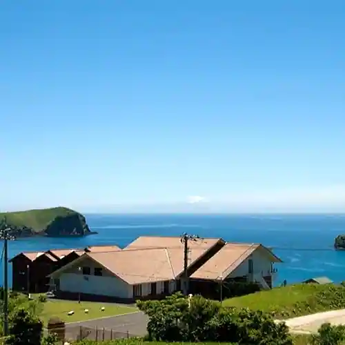
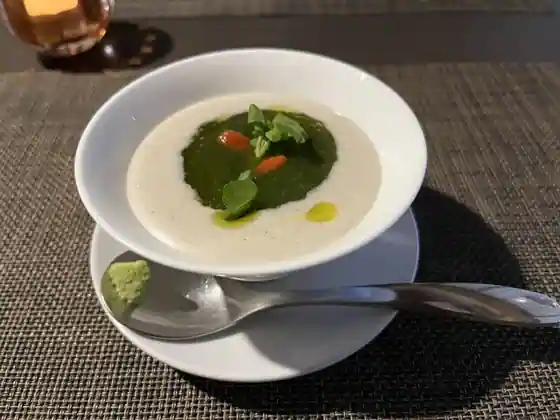
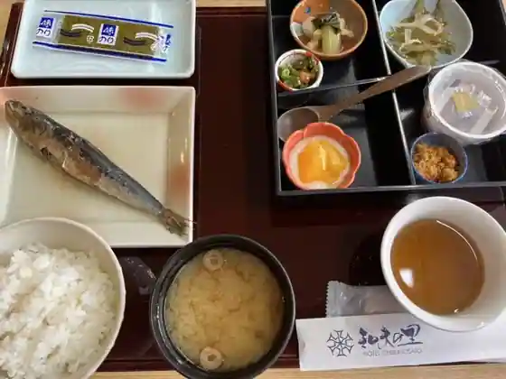
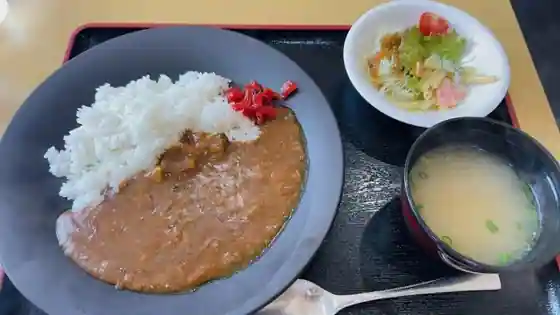
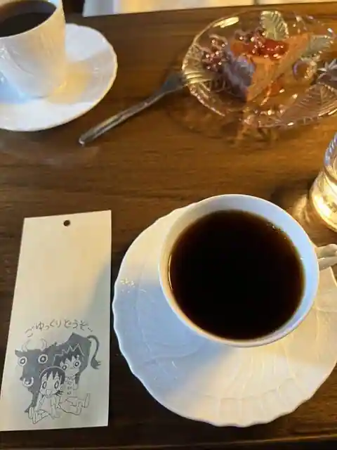
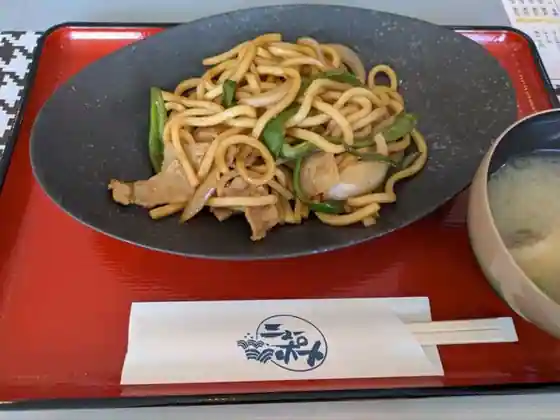
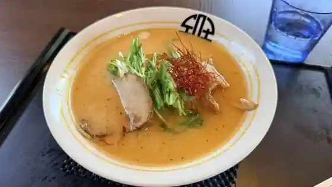
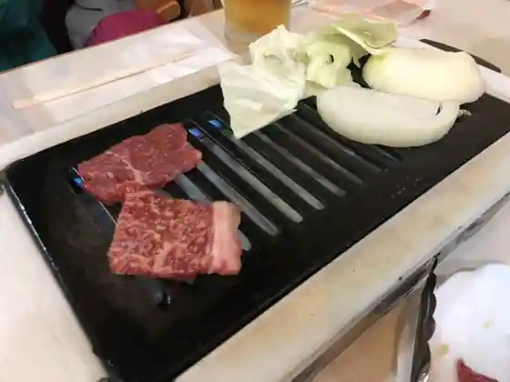

Chibu, Shimane: things to do, food and stays
Chibu · Shimane
Chibu
Highlighted on the Shimane map.

Stay
ホテル 知夫の里 ＜隠岐諸島＞

Hotel Tomo No Sato Oki Sho Shima
Hotel in Chibu with a large communal bath.
Dining
CHEZ SAWA

CHEZ SAWA
知夫の里

Tomo No Sato
どんどん

Dondon
のらり珈琲店

Norari Coffee
ニューポート

Nyupoto
ちぶり島 海の家

Chiburi Shima Uminoie
あさひや

Asahiya
Sights
Sekiheki
Aka Hage Yama

Chibu Sato Shima Tourism Association

Watari Tsu Beach

Matsu Yo Tera Garden

Local History Museum
Daihatsu Jaku Kei Shuzo Ko
Chibu Town Hall